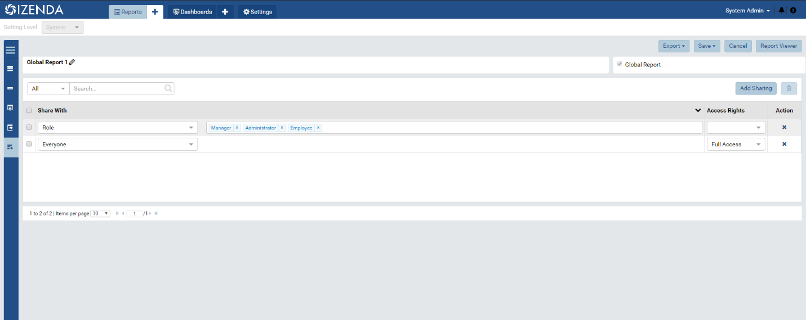
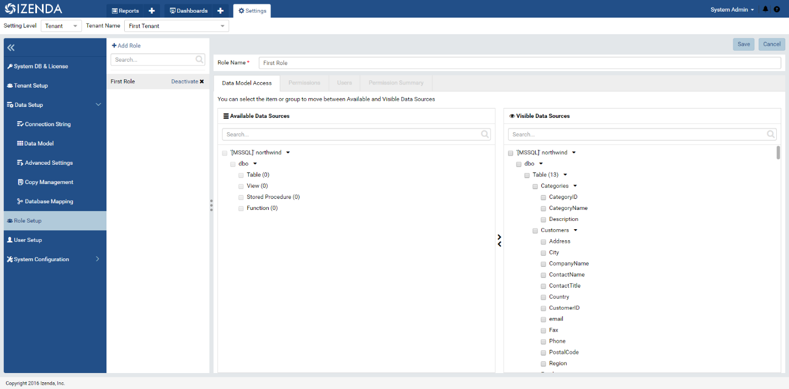
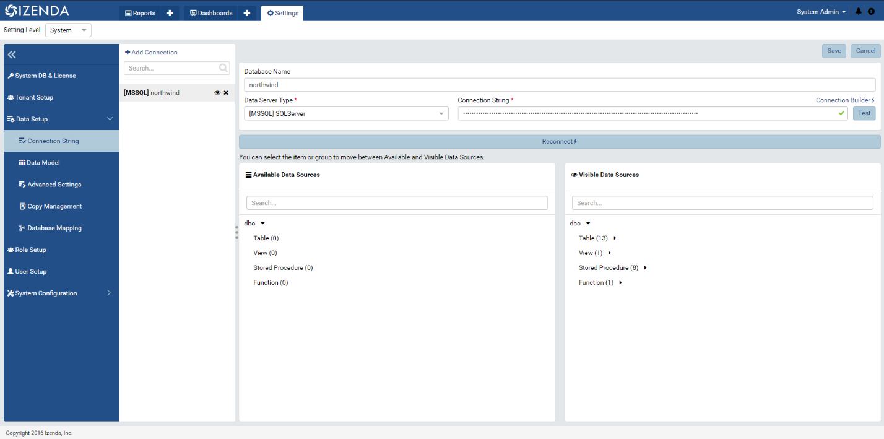
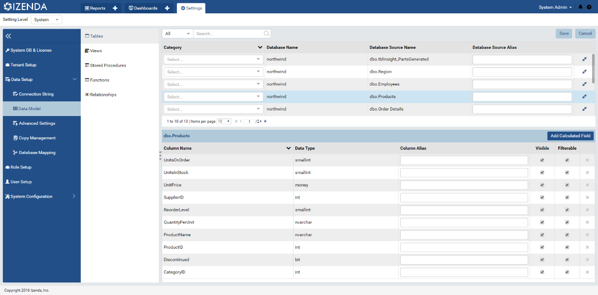
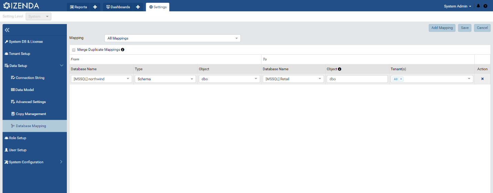
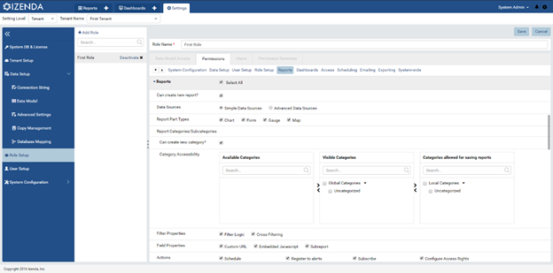
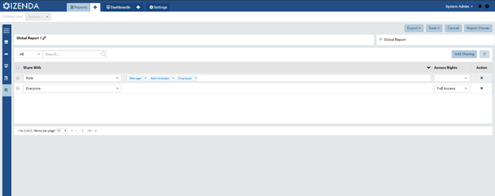

Permissions¶
Why Cant My Users See Report or Dashboard¶
Report Access Rights¶
- The first thing to check is that the report has physically been shared with a particular role or user. On the left-hand blue column in the report designer the last icon is labeled ‘Access’. This is where you can set rules for how this report is shared with different users and roles. The report will need some rule that grants access to the user you want to share with before they can see it.
- For more information on access rights, please see our Report Designer Access Page

Role Data Access¶
- Does the user’s role have access to all of the datasources and fields used in a report? This can be seen in the Data Model Access portion of the role setup page (Settings > Role Setup > Data Model Access). The user’s role will need access to every field and datasource used in a particular report to see it in the report list, this should be located in the ‘Visible Data Sources’ for this role, as shown below.

Role Category Access¶
- Within the Reports and Dashboards section of the Role Permission page (Settings > Role Setup > Permissions) you will see three columns labeled ‘Available Categories’, ‘Visible Categories’, and ‘Categories Allowed for Saving’. Ensure that the category the report is saved into is in ‘Visible Categories’ container for that particular role. (This is automatically assigned when setting sharing rights based on the permissions given to the user, please see this link for more details on the access rights and how they impact categories.
Why can’t tenant users see the Global Report I created in their report list?¶
Tenant Data Access¶
- Check the tenant’s connection string page (Settings>Data Setup > Connection String) and ensure that all data sources needed for the report you are sharing are present along the right-hand column labeled ‘Visible Data Sources’

- Also check in the Data Model page (Settings > Data Setup > Data Model) and make sure that every field within those data sources` is marked as visible and/or filterable

Database Mapping¶
- For global reports it is necessary to create a database mapping between the system level and the tenant level. This is done in the Database Mapping page (Settings > Data Setup > Data Model). This can be set up to map an entire database or one specific schema from the system level to the tenant. This lets Izenda know what datasources match up between the system’s connection string and the tenant’s

Role Data Access¶
- If the tenant has access to all of the datasources and fields used in a global report, you also need to check to see that a role has access to those same data sources. This can be seen in the Data Model Access portion of the role setup page (Settings > Role Setup > Data Model Access). Similar to the tenant’s data access you will need to make sure that every datasource needed for a particular report is along the right-hand column labeled ‘Visible Data Sources’ for those roles

Role Category Access¶
- Within the Reports and Dashboards section of the Role Permission page (Settings > Role Setup > Permissions) you will see three columns labeled ‘Available Categories’, ‘Visible Categories’, and ‘Categories Allowed for Saving’. For Global reports, they will always be in the ‘Visible Categories’ container for that particular role. Tenant users cannot save reports into Global Categories.

Report Access Rights¶
- The last thing to check is that the report has physically been shared with a particular role. On the left-hand blue column in the report designer the last icon is labeled ‘Access’. This is where you can set rules for how this report is shared with different users and roles. The report will need some rule that grants access to the role you want to share with before they can see it. Access Rights on global reports can only be set against Everyone and Roles.

- For more information on what these access rights are and what they do, please refer to our Report Designer Access Page
My users can see the dashboard in the dashboard list, but when they open it, they cannot see the some or any of the individual report parts used in the report.¶
- Because dashboards are a collection of reports, the user may have access to only some of the reports contained in the dashboard. This is a security feature. There may be several use cases where you need to share a dashboard with many tiles among everyone in your organization. But, only some users have access to parts of the dashboard. This feature ensures that the user only sees the specific tiles they have access to.
- If it is expected that the user should see the specific tile, the same steps in the item below should be followed to ensure the user has proper access to the report.